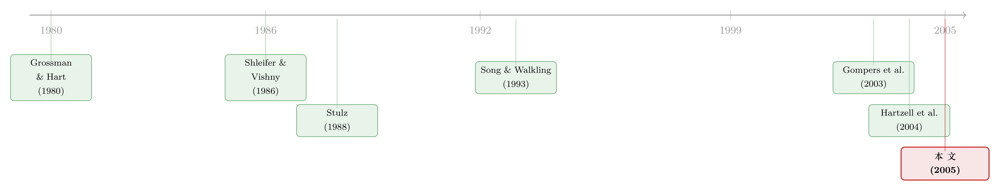

权力天平倒过来那一年：股东话语权如何反手抬高了并购溢价
本文读的是 Moeller (2005, Journal of Financial Economics)：在 1990 年代「友好并购」盛行的环境里，目标公司股东话语权越强（CEO 持股越低、内部董事比例越低、外部大股东在场），收购溢价反而越高——这恰恰和 1980 年代「敌意并购」研究得出的结论符号相反。把各种「股东弱势」的代理变量加总起来，溢价会被压低 5 到 16 个百分点。
1 一个被反转的常识
先问一个看上去答案显而易见的问题：一家公司的股东说话越算数，股东自己拿到的钱，是更多还是更少？
直觉会毫不犹豫地告诉你：当然是更多。股东是剩余索取权人，谁掌握了控制权，谁就能把蛋糕往自己这边切。所以股东话语权越强，公司价值越高、被收购时溢价越大——这几乎是公司治理 (corporate governance) 文献的默认底色。
可偏偏，并购市场曾经给出过一个相反的答案。
回到 1980 年代。那是「门口的野蛮人」横行的年代，敌意收购 (hostile takeover) 是主旋律，收购方常常绕过管理层，直接向股东出价抢股。在那样的世界里，研究者们（Shleifer and Vishny, 1986；Stulz, 1988；以及 Song and Walkling, 1993 的实证）发现了一件反直觉的事：目标公司 CEO 越强势、股东越弱势，收购溢价反而越高。
为什么？因为在没有有效收购防御的环境下，哪怕 CEO 极力反对，只要收购方肯出足够高的价钱，股东就会「倒戈」把交易投过去。CEO 越强、越难被股东推翻，收购方就必须把价码抬得越高，才能买动股东去对抗自己的 CEO。换句话说，高溢价是用来收买股东、突破 CEO 防线的「弹药」。于是出现了那个奇怪的负相关：股东控制力 ↑ → 溢价 ↓。
这就是本文要颠覆的起点。Moeller 的核心主张只有一句话：到了 1990 年代，这条关系的符号翻了过来。
2 为什么符号会翻过来：本文的核心机制
要理解这场反转，关键在于 1980 到 1990 年代之间，并购市场本身发生了一次彻底的换血。
本文虽然是一篇实证论文（没有正式的理论模型），但它的全部张力都压在【一个机制】上。读懂这个机制，整篇文章就读懂了——我们慢慢把它讲透。
首先，是收购防御的普及。进入 1990 年代，毒丸 (poison pill)、分级董事会 (staggered board) 等防御工具广泛可用，敌意收购的成功率变得极低。Moeller 的样本里，敌意交易只占 3.6%，超过 92.7% 的交易被明确标注为「友好」(clearly friendly)。权力的天平，整体性地从股东倒向了目标公司 CEO。
接着，一个自然的问题是：收购方该怎么做这笔买卖？
在 1980 年代，收购方的对手是股东——你要做的是用高价把股东争取过来。但在 1990 年代，真正的守门人变成了 CEO：敌意出价几乎不可能成功，你必须先说服 CEO 点头同意。
然后，真正关键的一步在于：怎么说服 CEO 用「更低」的价格答应交易？
答案是——给 CEO 私人好处 (private benefits)。合并后新公司里的职位、加厚的退休方案、加码的金色降落伞……收购方不再通过抬高溢价去间接补偿（那等于把钱发给所有股东），而是直接把好处塞给 CEO 一个人。论文说得很直白：
与其谈判出尽可能高的收购溢价，目标 CEO 转而和收购方讨价还价的，是他自己的私人好处。
于是反转出现了。 股东当然可以站出来拦住这种「贱卖公司换私利」的交易，但干预 (intervention) 是有成本的，而这个成本恰恰由 CEO 与股东之间的力量对比决定：
- CEO 越强、股东越弱 → 股东干预成本越高 → CEO 越能安心地用「压低溢价」去换私利 → 溢价越低；
- 反过来，股东越强（有带董事席位的外部大股东、内部人不掌控董事会）→ 干预成本越低 → CEO 不敢乱来 → 溢价越高。
这就是 1990 年代那条正相关的来源，也正是 1980 年代那条负相关的镜像。同一套「权力对比」的逻辑，在两种并购环境下给出了符号相反的预测。本文的主假设 (Section 2)，就是要在 1990 年代的数据里把这条正相关钉死。
3 识别策略：把「看不见的控制力」拆成可观测的代理变量
问题来了：「股东控制力」本身看不见摸不着，怎么进回归？
Moeller 的办法是用一组目标公司治理结构的代理变量 (proxies)，从三个维度刻画「CEO 有多强 / 股东有多弱」。所有治理变量都从 SEC 文件（委托书 proxy statement 与 10-K）里手工收集——这是本文最扎实的地方。
- 目标 CEO 持股比例 (target CEO share ownership)：CEO 持股越多，越能在董事会安排上一手遮天，股东干预越贵。预期与溢价负相关。（论文也提到一种相反观点——持股让 CEO 与股东利益对齐，但作者认为「控制」效应占主导，因为直接给 CEO 私利总比拐弯抹角抬溢价更省钱。）
- 外部大股东 (outside blockholders)：持股 ≥
5%的外部受益人。源于 Grossman and Hart (1980) 的搭便车问题——有大股东在，干预才划得来。预期与溢价正相关。 - 内部董事比例 (fraction of inside directors)：内部董事的激励与 CEO 一致，他们占董事会比例越高，股东越难推动干预。预期负相关。
- CEO 的财务激励：用 CEO 期权数量、期权的 Black-Scholes 价值、以及价值对股价的敏感度作代理（按 Core and Guay, 1999, 2002 的方法估算）。这是「用激励替代控制」的另一条路。
最后，作者把几个维度拼成一个「高股东控制」指示变量 (high shareholder control indicator)：当公司同时满足「董事长或总裁与 CEO 分设、CEO 不是大股东、董事会以外部人为主、CEO 任期短」时取 1。这相当于专门挑出「股东几乎不可能容忍 CEO 贱卖公司」的极端情形，用来做最干净的对比。
被解释变量是收购溢价 (takeover premium)。为了剔除「交易成不成」的概率干扰，作者不直接用公告期收益，而是用收购方实际报出的每股价格相对目标公司事前股价的涨幅：
$$\text{Takeover premium} = \frac{P^{\text{offer}}}{P^{\text{target}}_{-6}} - 1$$
其中分子是收购方报出的每股收购价（换股交易里用公告日收盘价折算），分母是公告前第六个交易日的目标股价。回归用 OLS，控制变量里包括敌意虚拟变量、要约收购虚拟变量、目标/收购方相对规模、现金支付比例、行业与年度固定效应，以及一个很关键的控制——公告窗口前 200 个交易日的超额收益 (excess return 200 days prior)，用来吸收「市场提前预期了收购」「目标公司近期表现差」等与治理无关的因素。
这套设计的软肋，作者自己也清楚：治理变量是横截面相关而非外生的。CEO 持股、董事会构成都是公司多年内生演化的结果，可能同时和某些「定价但未观测」的公司特征相关。本文没有 DiD、没有 IV、没有 RDD——它本质上是一组带丰富控制的横截面相关性。读它的结论时，「相关」二字要时刻记在心里。
4 数据
- 样本：1990-01-01 至 1999-12-31 间公告的并购，取自 SDC Mergers and Acquisitions 数据库。
- 筛选：仅已完成交易、交易额 ≥
$100M、买卖双方均为美国公司；收购方需在交易中取得目标至少25%股份、事后持股 ≥50%；排除金融与房地产信托、关联方交易、目标过小（市值 < 收购方 5%）或过大、以及若干极端值与高杠杆目标。 - 样本量：层层筛选后剩
388个观测；其中能算出收购溢价的有373个。约83%的样本集中在 1990 年代下半段。 - 观测单位：单笔并购交易。
几个值得记住的描述性事实（Table 1）：目标公告收益平均 21.3%，收购溢价平均 30.8%，收购方公告收益平均 −2.9%，买卖双方合计市值平均增加约 1.7%。目标 CEO 平均持有公司 6.8% 的股权（中位数仅 2%），内部董事平均占 31.1%，外部大股东持股平均 24.4%。敌意交易里的目标，溢价比友好交易里高出约 10 个百分点——这本身就和「敌意环境下高溢价」的旧逻辑一致，但它在 1990 年代已是极少数。
5 主要结果：符号，真的翻过来了
核心结论可以浓缩成一句：所有指向「股东弱势 / CEO 强势」的代理变量，都对应着更低的收购溢价。
- 把这些代理变量合起来，它们能把溢价压低
5 到 16 个百分点。按平均目标市值约$1.2 billion（论文正文口径）计算，这相当于一笔可观的财富，被从普通股东手里腾挪出来、分给了其他相关方（首当其冲是 CEO）。 - 用那个「高股东控制」指示变量做切分时，结果更直观：股东控制力高的交易里，收购方收益更低、目标收益更高。也就是说，蛋糕从收购方那头被切回给了目标股东——这正是「股东管得住 CEO，CEO 就没法贱卖公司」的直接证据。
- 至于 CEO 的期权激励，作者几乎找不到它影响溢价的证据。这有点意思：理论上期权能让 CEO 与股东利益对齐，从而替代直接的股东控制；但数据说，真正起作用的是控制，而不是激励。
- 一些控制变量也符合先验：现金支付显著抬高溢价（与 Travlos, 1987 一致）；目标相对收购方越大，溢价越低；事前 200 日超额收益对溢价有显著的负影响（高度显著），说明「被提前预期 / 近期表现差」确实需要被控制掉。
把这些拼起来，本文完成了它最想做的事：在一个干净的、以友好交易为主的 1990 年代样本里，证明了股东控制与收购溢价的正相关，并以此回敬 1980 年代文献里的负相关。它顺带还削掉了一个常被援引的「高管权力论」论据——如果给 CEO 更大的自由裁量权真的对股东有利，我们不该看到「股东管得越松、溢价越低」。
6 文献脉络
把这条线索捋直，故事其实很完整。
最早的地基是 Grossman and Hart (1980) 关于搭便车问题的洞见：分散的小股东谁也不愿意承担监督成本，于是大股东（blockholder）的存在才让「干预」变得可行——这给本文的「外部大股东」代理变量提供了理论根。
第一波高潮在 1980 年代的敌意并购研究：Shleifer and Vishny (1986) 与 Stulz (1988) 从理论上论证了「强势管理层抬高了攻破防线所需的溢价」，Song and Walkling (1993) 给出了实证。这一波得出的，是负相关。

转折发生在并购环境本身的换血之后。Gompers, Ishii and Metrick (2003) 的治理指数 (G-index) 把「公司治理与公司价值」的关系推到了文献中央；而在并购这个具体战场上，与本文最近的两篇是 Hartzell, Ofek and Yermack (2004) 与 Wulf (2004)。前者细致刻画了目标 CEO 在「财务收益 vs. 合并后职位」之间的权衡，发现 CEO 拿到职位时财务收益被压低、且这类交易里溢价更小；后者在 40 桩「对等合并」(mergers of equals) 里发现目标管理层受到优待、收购方收益更高而目标收益更低。
本文站在的位置很清楚：它不像 Hartzell 等人那样只盯着 CEO 拿到了什么，而是把目标股东的控制力与买卖双方的公告收益直接挂钩；它的代理变量覆盖面比 Hartzell 等人更广，样本（388 桩）也比 Wulf 的 40 桩更大、更不依赖于「谁是收购方谁是目标」这种在对等合并里极难判定的分类。一句话：它把 1980 年代那条被反转的关系，在 1990 年代重新量了一遍，并给出了机制。（关于目标 CEO 在谈判桌下「自己给自己发好处」这条暗线，可参见《最后一分钟的两百万股期权》；关于「股东说了算时债主是否遭殃」的治理符号问题，可参见《股东说了算，债主就要遭殃吗？》；关于卖方为何「故意偏心」地设计收购竞价，可参见《卖公司这件事》。）
7 评论与延伸（Q&A + 研究方向）
(a) 几个可能的疑问
Q：这篇文章和 1980 年代的研究到底矛盾不矛盾？
不矛盾，反而是互补的。两者共用同一套「股东 vs. CEO 权力对比」的逻辑，只是并购环境换了：1980 年代是敌意环境，高溢价是「收买股东倒戈」的弹药，所以 CEO 越强溢价越高；1990 年代是友好环境，CEO 是守门人，强势 CEO 会用「压低溢价」换私利，所以 CEO 越强溢价越低。符号翻转的根源不是结论打架，而是制度背景变了。
Q：CEO 持股低就等于股东控制强吗？持股不也可能让 CEO 和股东利益对齐？
这正是本文最微妙的地方。作者承认存在「利益对齐」这一相反解释，但他押注「控制」效应占主导，理由是：直接给 CEO 私人好处永远比抬高溢价（钱要分给所有股东）更高效，所以 CEO 持股带来的「掌控董事会、抬高干预成本」这一面会盖过对齐效应。数据上溢价确实随 CEO 持股下降——支持「控制」解释，但这终究是个识别上的取舍，而非铁证。
Q：这是因果，还是相关？
老实说，是相关。治理结构是内生的、横截面的，没有外生冲击或工具变量。作者用了行业/年度固定效应和事前 200 日超额收益等控制来缓解遗漏变量，但「某个未观测的公司特征同时决定了治理结构和溢价」这种担忧无法被完全排除。把它当作「在精心控制下的稳健相关性」来读最稳妥。
Q：为什么用收购方实际报价、而不是公告期股价收益来算溢价？
因为公告收益是「价格 × 成交概率」的混合体，会被「交易能否完成、会不会有竞争者」污染。用
报价 / 事前股价 − 1可以把成交概率剥掉。而且本文样本绝大多数是最终都完成了的友好交易，这个问题本来就小。
Q：期权激励为什么没用？
这是个反直觉但重要的发现。理论上期权能替代直接控制，可数据里几乎看不到期权持仓影响溢价。一个解读是：在并购这种「一锤子买卖」里，期权多半在交易完成时立即归属变现，CEO 反而更有动机去换取确定的私人好处，而不是为全体股东争取最大溢价；career-concern 类的隐性激励（Gibbons and Murphy, 1992）也对临近退休的 CEO 失效。
Q：5 到 16 个百分点的经济意义有多大？
很大。按平均目标市值约
$1.2 billion算，十几个百分点的溢价差是数以亿计的财富转移。它意味着「股东控制松弛」并非账面上的治理瑕疵，而是真金白银地从普通股东口袋里流向了 CEO 等其他相关方。
(b) 几个可能的研究问题与提案
1. 把这条关系搬进公司债 / 信用市场。
【经济故事】股东话语权强会抬高股权溢价，但对债权人未必是好事——更强的股东可能在并购中追求更激进、更高杠杆的交易，损害债权人。本文只看了股权两边的收益，债的那一边是空白。 【可行性】中。可用 TRACE 的目标公司债券价格 + 本文式的治理代理变量，看「高股东控制」交易里目标债券的 CDS 利差 / 债券公告收益如何变化。难点在于并购目标里有公开债券的子样本偏小，且需处理债券流动性。
2. 用一次外生的治理冲击，把「相关」升级成「因果」。
【经济故事】本文最大的软肋是内生性。如果能找到一个不影响并购定价、却外生地改变股东控制力的冲击，就能干净地识别这条机制。 【可行性】中。候选是各州反收购法的交错出台、或指数纳入带来的被动持股（外部 blockholding）外生变动，做一个 DiD / IV。挑战在于这些冲击同时影响交易发生概率（选择效应），需要同时建模「是否被并购」与「溢价多少」。
3. 外资大股东 vs. 本土大股东：谁更能管住 CEO？
【经济故事】外部大股东能压低股东干预成本，但不同类型的大股东监督能力天差地别。外资机构投资者往往被视为更主动的治理者，但也可能信息劣势、鞭长莫及。 【可行性】中。用 13F + FactSet 区分大股东的国籍 / 类型，在并购样本里交互「外资 blockholding × 收购溢价」。需要小心外资持股本身的选择性（外资偏好治理已经较好的公司）。
4. 私人好处的「价目表」：CEO 究竟用多少溢价换了多少职位与退休包？
【经济故事】本文论证了「CEO 用压低溢价换私利」的机制，但没有把私利量化到「一个百分点的溢价折让 ≈ 多少美元的私人好处」。把交换比率估出来，机制就从定性变定量。 【可行性】中偏低。需要手工从委托书里收集合并后职位、退休方案、加码降落伞的现金价值（沿 Hartzell et al., 2004 的路子），与溢价折让做匹配。数据收集成本高，但 doable。
5. 进入 2010s-2020s：维权基金 (activist) 时代，这条关系还成立吗？
【经济故事】1990 年代后，股东维权 (shareholder activism) 兴起，外部大股东的「干预成本」可能被系统性地拉低。如果机制对，那么维权基金在场时，股东控制对溢价的正向作用应当被放大。 【可行性】高。维权事件数据（如 13D 申报、FactSet SharkWatch）成熟，可在并购样本里检验「目标有维权股东 × 治理代理变量」的交互效应，是本文一个自然且现成的现代延伸。
参考文献
- Agrawal, A., Walkling, R.A. (1994). Executive careers and compensation surrounding takeover bids. Journal of Finance 49, 985–1014.
- Core, J., Guay, W. (1999). The use of equity grants to manage optimal equity incentive levels. Journal of Accounting and Economics 28, 151–184.
- Gibbons, R., Murphy, K.J. (1992). Optimal incentive contracts in the presence of career concerns: theory and evidence. Journal of Political Economy 100, 468–505.
- Gompers, P.A., Ishii, J.L., Metrick, A. (2003). Corporate governance and equity prices. Quarterly Journal of Economics 118, 107–155.
- Grossman, S.J., Hart, O. (1980). Takeover bids, the free-rider problem and the theory of the corporation. Bell Journal of Economics 11, 42–64.
- Hartzell, J., Ofek, E., Yermack, D. (2004). What's in it for me? CEOs whose firms are acquired. Review of Financial Studies 17, 37–61.
- Moeller, T. (2005). Let's make a deal! How shareholder control impacts merger payoffs. Journal of Financial Economics 76(1), 167–190.
- Shleifer, A., Vishny, R.W. (1986). Large shareholders and corporate control. Journal of Political Economy 94, 461–488.
- Song, M.H., Walkling, R.H. (1993). The impact of managerial ownership on acquisition attempts and target shareholder wealth. Journal of Financial and Quantitative Analysis 28, 439–457.
- Stulz, R. (1988). Managerial control of voting rights: financing policies and the market for corporate control. Journal of Financial Economics 20, 25–54.
- Travlos, N.G. (1987). Corporate takeover bids, methods of payment, and bidding firms' stock returns. Journal of Finance 42, 943–963.
- Wulf, J. (2004). Do CEOs of target firms trade power for premium? Evidence from "mergers of equals". Journal of Law, Economics, and Organization 20, 60–101.